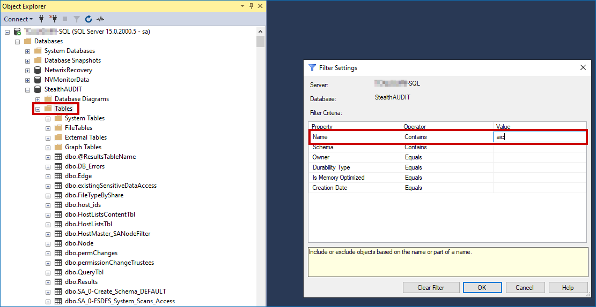
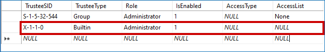

Overview
In your Netwrix Access Information Center (AIC) environment, you have disabled the built-in admin account as per the best security practices. Your current Windows authentication account is locked out or compromised in the Active Directory. This article covers the steps to re-enable the built-in admin account on the SQL backend of Netwrix Access Analyzer without access to the AIC
Instructions
Refer to the following steps to re-enable the built-in admin account on the SQL backend:
IMPORTANT: This will only enable the account and will not reset it to the default password.
-
Log in to SQL Management Studio with the Access Analyzer service account or another account with dbo permissions on the Access Analyzer database.
-
Right-click the Tables folder of the Access Analyzer database and select Filter > Filter settings. Type
AICinto the Value field.NOTE: Verify that you are referencing the Access Analyzer database and not another database.
 -
Locate the SA_AIC_Authentication table. Right-click it and select Edit Top 200 rows.
-
For the
BuiltinAdministrator role, set the IsEnabled field value to1and click Save.